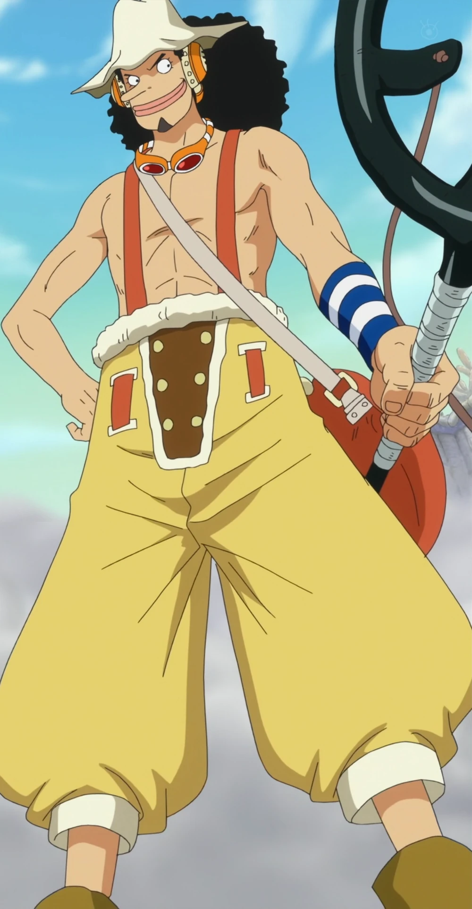

Personajes
Un seguidor de One Piece ha contabilizado 1094 personajes. Pero este número puede aumentar porque el
manga se encuentra en emisión.
Monkey D. Luffy

Monkey D. Luffy, más conocido como Luffy «Sombrero de Paja», es el protagonista principal de la serie de
manga y anime One Piece. Es el capitán y
fundador de los Piratas de Sombrero de Paja así como un de los Cuatro Emperadores que gobiernan los
mares del Nuevo Mundo. Comió una fruta del diablo llamada fruta Gomu Gomu, que le convirtió en un
hombre de goma. Además de esto, posee varias habilidades que le hacen ser un pirata más que especial; un
gran ejemplo de ello es la capacidad de usar el haoshoku haki ―que sólo lo posee una persona dentro de
un millón― y poseer también los otros dos tipos de haki.
Roronoa Zoro

Roronoa Zoro,conocido como El Cazador de Piratas,
es el primer pirata que se unió a Monkey D. Luffy, y el principal combatiente de los Piratas de Sombrero
de Paja, uno de sus dos espadachines y uno de los oficiales principales de la Gran Flota de Sombrero de
Paja, así como un antiguo cazarrecompensas.
Nami

Nami, apodada Gata Ladrona es una pirata y la navegante de los
Piratas del Sombrero de Paja , así como una de los oficiales principales de la Gran Flota de Sombrero de
Paja. Es el tercer miembro de la tripulación y la segunda en unirse, haciéndolo oficialmente durante el
arco de Arlong Park.
Usopp

Usopp es el francotirador de los Piratas de Sombrero de Paja y uno de los oficiales
principales de la Gran Flota de Sombrero de Paja. Es el cuarto miembro de la tripulación y el tercero en
unirse oficialmente. A pesar de abandonar la banda en el arco de Water 7, se volvió a unir en el arco
del regreso a Water 7.
Sanji

Sanji, conocido como Pierna Negra y nacido como Vinsmoke Sanji,es el cocinero de los Piratas de Sombrero
de Paja, así como uno de los oficiales
principales de la Gran Flota de Sombrero de Paja. Es el quinto miembro de la tripulación, y el cuarto en
unirse. Él nació en el North Blue, siendo el primer tripulante en no ser originario del East Blue.
Tony Tony Chopper

Tony Tony Chopper es el médico de los Piratas de Sombrero de Paja, así
como uno de los oficiales principales de la Gran Flota de Sombrero de Paja. Es un reno que comió la
fruta Hito Hito de la isla de Drum. Él es el sexto miembro de la tripulación y el quinto en unirse a
ella.
Nico Robin

Tony Tony Chopper es el médico de los Piratas de Sombrero de Paja, así
como uno de los oficiales principales de la Gran Flota de Sombrero de Paja. Es un reno que comió la
fruta Hito Hito de la isla de Drum. Él es el sexto miembro de la tripulación y el quinto en unirse a
ella.
Franky

Franky, apodado el Hombre de Hierro, es el carpintero naval de los
Piratas de Sombrero de Paja y uno de los oficiales principales de la Gran Flota de Sombrero de Paja. Es
el octavo miembro de la tripulación y el séptimo en unirse, haciéndolo al final del arco del regreso a
Water 7.
Brook

Brook, conocido como Soul King, es el músico de los Piratas de
Sombrero de Paja, uno de sus dos espadachines y uno de los oficiales principales de la Gran Flota de
Sombrero de Paja. Es el noveno miembro de la tripulación y el octavo en unirse, haciéndolo al final del
arco de Thriller Bark.